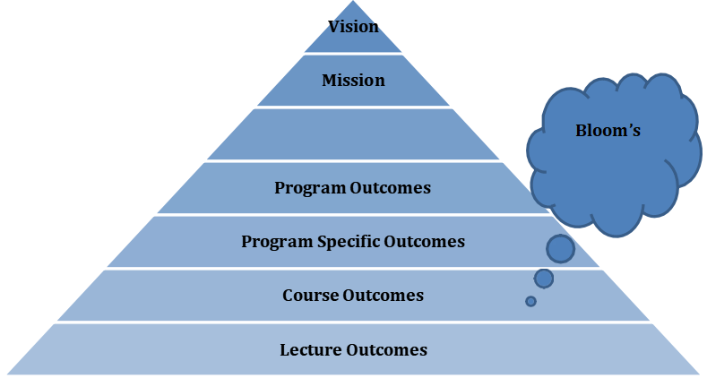

Outcome-based Education (OBE) emphasizes on many components in terms of student achievement in
a program. The most important components are the Program Outcomes (POs), Program Educational
Objectives (PEOs) and Program Specific Outcomes (PSOs). POs, as stated by NBA, represent the
knowledge, skills and attitudes the students should have at the end of a four-year engineering program
in India, whereas, PEOs are broad statements that describe the career and professional accomplishments
in three to five years after graduation that the program is preparing graduates to achieve. PSOs are
statements that describe what the graduates of a specific engineering program should be able to do.
Other important components are Course Objectives, Course Outcomes and Lecture Outcomes. A course
objective broadly describes what a faculty member will cover in a course, whereas Course Outcomes
are the detailed description of the abilities what a student must acquire at the conclusion of a course.
They are the resultant knowledge, skills and attributes the student acquires at the end of a course. It
defines the cognitive processes a course provides. Lecture Outcomes state what students will know or
Be able to do as a result of one-hour session or activity. They can also be expressed as knowledge, skills,
or attitudes.
Outcome mapping facilitates the alignment of Course Outcomes with Program Outcomes and Program
Specific Outcomes. It allows faculty members to create a visual map of a program. It is also used to
explore how students are meeting Program Outcomes at the course level. Outcomes mapping mainly
focuses on student learning. Every COs should be mapped to different POs and PSOs based on their
influence of COs on them.
In the process to map COs with POs and PSOs, the Course Outcomes are designed in such a way so that they can fulfill the requirements of Program Outcomes and Program Specific Outcomes. The keywords used to identify COs, bloom's taxonomy has been referred in conjunction with the course syllabus. The Course Outcomes are designed by Course Coordinators and finalized by Quality Improvement Committee (QIC) to achieve the Vision of the department with the help of its mission statements. In order to attain the defined COs in effective and efficient manner, course coordinators design the Lecture Outcomes in line with Course Outcome.
The following steps are used to formulate course outcome:
The strength of mapping of COs with POs and PSOs are defined at three levels:
Level#1: Slight or Low
Level#2: Moderate or Medium
Level#3: Substantial or High
Method used to define the correlation level is based on the course hours devoted to the specific Course Outcome which address the given Program Outcome. Following formula has been used to show the connection between a single Course Outcome and Program Outcome and Program Specific Outcome. The COs-POs and COs-PSOs mapping depends on two factors: first, the learning level and second, the hours provided for that learning level. There are three learning levels are identified for this purpose.
| Learning Level | % of hours required |
|---|---|
| Master | >=40% |
| Reinforce | <40% and >=25% |
| Understanding | <=25% and >=10% |
| Introduction | Less than <10% |
If hours devoted to the specific PO and PSO is to achieve Master level of learning, which is greater than or equals to 40% of total number of hours allotted to the specific Course Outcome, then the correlation level will be Substantial. If hours devoted to the specific PO and PSO is to achieve Reinforce level of learning, which is less than 40% and greater than or equals to 25% of total number of hours allotted to the specific Course Outcome, then the correlation level will be Moderate.
If hours devoted to the specific PO and PSO is to achieve Understanding level of learning, which is less than 25% and greater than or equals to 10% of total number of hours allotted to the specific Course Outcome, then the correlation level will be Slight. In case the hours devoted to the specific PO or PSO is just to introduce the concept, which is less than 10%, that PO or PSO is not considered for correlation with COs.
The Institute has been established in the year 2007 with the vision to create knowledge based society and to become valuable resource for enriching mankind. The Department of Computer Engineering has been incepted in same year with the objective to create an environment to produce competent technocrats and innovators. The Department level Committee has executed SWOT analysis on performance of the first Batch of BTech(CS) graduated in the year 2011, according to the objectives and presented report to governing council. Seventh meeting of The Governing Council of the institute was conducted on 9th September 2011. With reference to swot Analysis presented in the meeting, it was proposed by the Chairman to define the department’s Vision, Mission and Program Educational Objectives (PEOs) in line to the Vision, Mission of the institute. The Program Accreditation Assessment Committee (PAAC) has been formed on principle’s notice to develop and establish Vision, Mission and Program Education objectives of the department and program respectively. The PAAC consists of Head of the Department, senior faculty members, employers, parents and alumni. The meeting of PAAC was conducted on 11th November, 2011 to define Vision, Mission and PEOs. In this meeting inputs and views were taken from all Committee members. The first draft was sent to Quality Improvement Committee (QIC) for approval. QIC conducted survey and took advices and comments from all internal and External stakeholders and then QIC suggested some amendments based on the inputs, feedbacks, surveys and experiences of all stakeholders. In the next meeting of PAAC vision, mission and PEOs are corrected and finalized by QIC.After getting improvement and suggestions received from QIC, the second meeting of PAAC was organized to finalize the vision, mission and PEOs after incorporating suggestions made by QIC. The Vision, Mission and PEOs were presented to Governing Council for approval. The mission statements are reviewed on yearly basis by the PAAC so that latest trends and scenarios can be adopted in the field of Computer Engineering.
Program Education objectives are designed in line of Department vision and mission. The draft was framed during the interactions between Academician, industry professionals, Students, Industry employers, Management, Professional societies and Alumni at various platforms. Data required for the same is collected and compiled by Program Accreditation and Assessment Committee (PAAC). The feedback, suggestions and advices from committee members were compiled, consolidated and presented in the form of draft to QIC for review. QIC conducted survey and took advices and comments from all internal and External stakeholders and then QIC suggested some amendments based on the inputs, feedbacks, surveys and experiences of all stakeholders. After getting reviews, suggestions were incorporated in Program education objectives. PEOs were published and disseminated after approval from Governing Council.
Stages to finalize the PEOs
Stage 1: Information collection and compilation
The feedback, suggestions and advices that are evolved during the interactions between Faculty-industry professionals, Students, Industry employers, Management, Department, Professional societies and Alumni at various platforms are collected and compiled.
Stage 2: Information Examination
The Program Accreditation Assessment Committee (PAAC) analyzed the collected data during its meetings. Reviewed proposal was sent to QIC for the approval.
Stage 3: Defining PEOs
Based on the analysis of the data, the PEO statements were framed. Based on the suggestions made by QIC, Program Education objectives revised according to the needs of students and department.
Stage 4: Establishing PEOs
A meeting was conducted with all the stake holders of the program to establish the Program Educational Objectives of the department. After finalizing program education objectives, they were published and disseminated among all the stakeholders through various medium.
To establish consistency between Program Education Objectives (PEOs) and Mission statements various interactions were organized among internal and external stakeholders. Program Accreditation and Assessment Committee (PAAC) has framed Vision, Mission and Program Educational Objectives after consulting with all committee members. Program Education Objectives were aligned with Vision, Mission od the Department and Program Outcomes (POs). The following measures were used to improve consistency between Mission and program Education Objective.
| PEO's | Mission of the Department |
|---|---|
| PEO1: Core Competence To understand, analyze design and develop the technical specification To provide engineering solution of research oriented problem To create products for the society in the field of computer engineering. |
M1:-To Develop Competent Engineer
M2:-To Improve Design and Execution skill M3:-To Develop socially responsible Technical Expert M4:-To Contribute to the research and Discovery |
| PEO2: Cognitive Intelligence To lead the upcoming generation towards creation and innovation To use emerging cutting-edge technology with effective communication skills and leadership quality. |
M4:-To Contribute to the research and Discovery
M3:-To Develop socially responsible Technical Expert |
| PEO3:Professional Skills To work efficiently as competent engineer To become ethical and responsible towards themselves, team members, society and the nation. |
M1:-To Develop Competent Engineer
M3:-To Develop socially responsible Technical Expert |
| Components of PEOs | To Develop Competent Engineer | To Improve Design and Execution skill | To Develop socially responsible Technical Expert | To Contribute to the research and Discovery |
|---|---|---|---|---|
| Core competence | 3 | 3 | 1 | 2 |
| Cognitive Intelligence | - | - | 2 | 3 |
| Professional Skill | 2 | - | 3 | - |
Designed and Developed by : Dev Tekwani | PIET